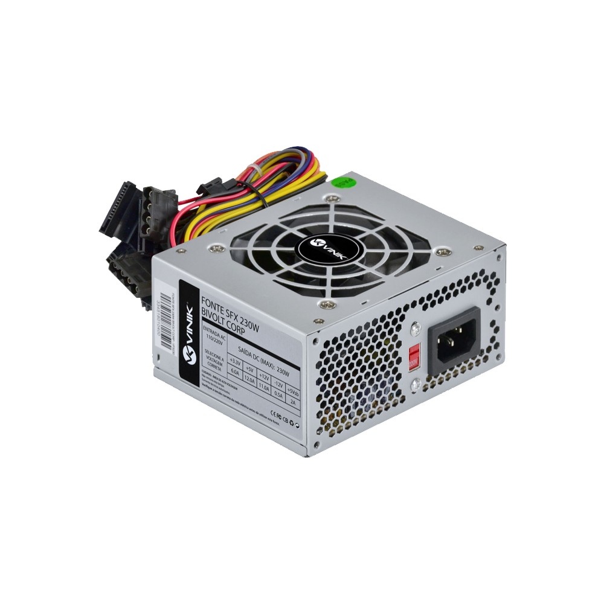
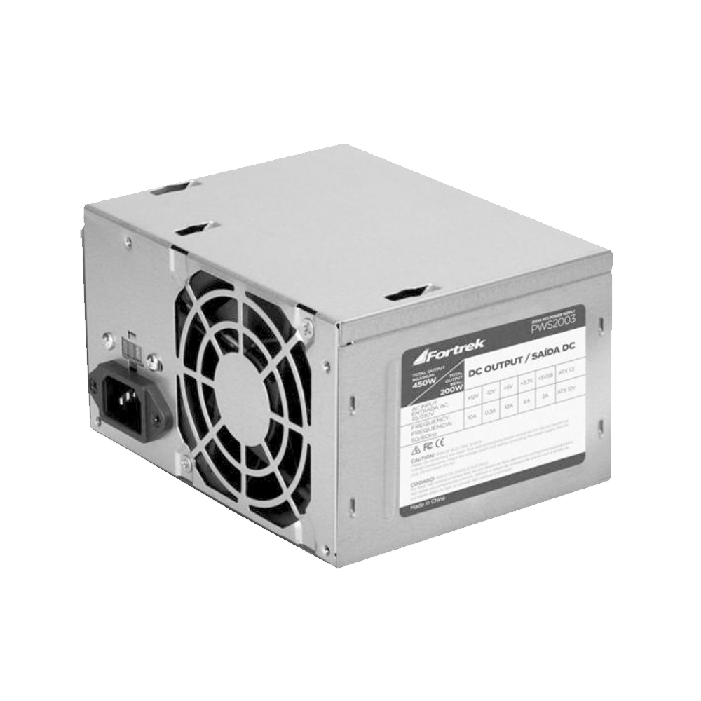
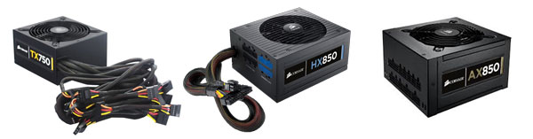

A fonte de alimentação é um componente crucial em qualquer sistema eletrônico, incluindo computadores. Ela converte a energia elétrica da rede (corrente alternada - CA) em uma forma utilizável pelos componentes internos (corrente contínua - CC), regulando a tensão e a corrente para fornecer energia estável e segura para a operação do sistema. Em computadores, a fonte de alimentação fornece energia para componentes como o processador, placa-mãe, disco rígido, unidade de armazenamento e placa de vídeo.

Quais são as funções da Fonte de Alimentação?
- Conversão de Corrente Alternada (CA) para Corrente Contínua (CC): A energia fornecida pela rede elétrica é em forma de corrente alternada (CA), que não é adequada para os circuitos internos de um computador. A fonte converte essa energia em corrente contínua (CC), necessária para os componentes.
- Regulação de Tensão: Os componentes do computador operam em diferentes tensões, como 3,3V, 5V e 12V. A fonte de alimentação converte a tensão de entrada (110V ou 220V) em diferentes tensões de saída, adequadas para cada componente.
- Proteção Contra Sobretensão e Curto-Circuito: A fonte de alimentação inclui circuitos de proteção que evitam danos causados por flutuações de energia, sobretensões, sobrecargas e curtos-circuitos. Esses recursos protegem tanto o sistema quanto a própria fonte de alimentação
- Eficiência Energética: Fontes de alimentação de alta qualidade são projetadas para converter a energia de forma eficiente, reduzindo a perda de energia na forma de calor e economizando eletricidade. A certificação 80 PLUS, por exemplo, é uma garantia de que a fonte é energeticamente eficiente, com níveis de eficiência que variam de 80% a 94%, dependendo da carga.
- Estabilidade de Energia: As fontes de alimentação estabilizam a energia, fornecendo uma corrente constante e evitando flutuações bruscas que podem prejudicar o funcionamento dos componentes internos, prolongando a vida útil dos dispositivos conectados.
Quais são os tipos de Fonte de Alimentação?
As fontes de alimentação são classificadas com base na sua construção, eficiência, modularidade e finalidade de uso. Abaixo estão os principais tipos:
Fontes AT e ATX
- Fonte AT : O padrão AT (Advanced Technology) foi usado em computadores mais antigos (década de 1980 até meados de 1990). Elas possuem conectores de energia básicos e precisam ser desligadas manualmente.
- Fonte ATX: O padrão ATX (Advanced Technology Extended) substituiu o AT e é amplamente usado até hoje. Esse tipo inclui recursos de economia de energia e permite o desligamento controlado pelo sistema operacional. Fontes ATX também oferecem múltiplas linhas de voltagem (12V, 5V, 3.3V) para componentes diferentes.

Fontes Modulares e Não Modulares
- Fontes Não Modulares: Em fontes não modulares, todos os cabos estão conectados permanentemente à fonte de alimentação. Embora sejam mais baratas, os cabos extras podem atrapalhar a organização e a circulação de ar dentro do gabinete, dificultando o gerenciamento de cabos.
- Fontes Modulares: Nas fontes modulares, os cabos podem ser conectados ou removidos conforme necessário, permitindo uma organização melhor e mais flexibilidade. Isso ajuda na ventilação e na estética do gabinete, pois você conecta apenas os cabos que vai usar.
- Fontes Semi-Modulares: Esse tipo de fonte é uma mistura entre modular e não modular. Alguns cabos essenciais (como o de alimentação da placa-mãe) são fixos, enquanto outros (como cabos para periféricos) são removíveis.
